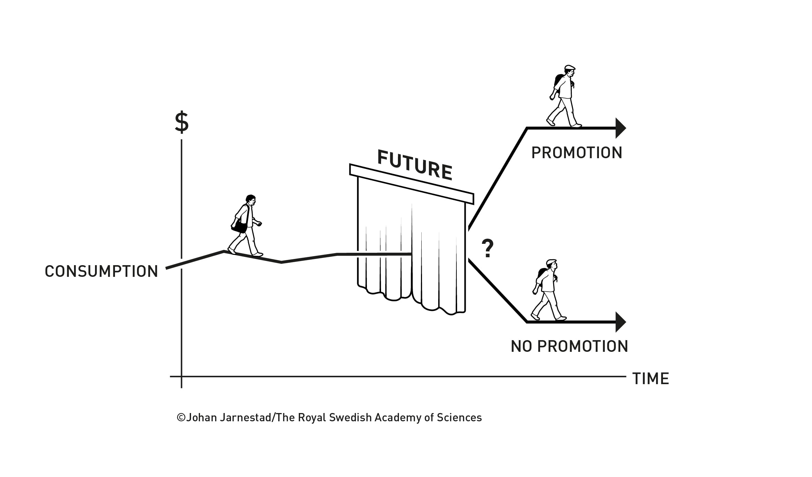
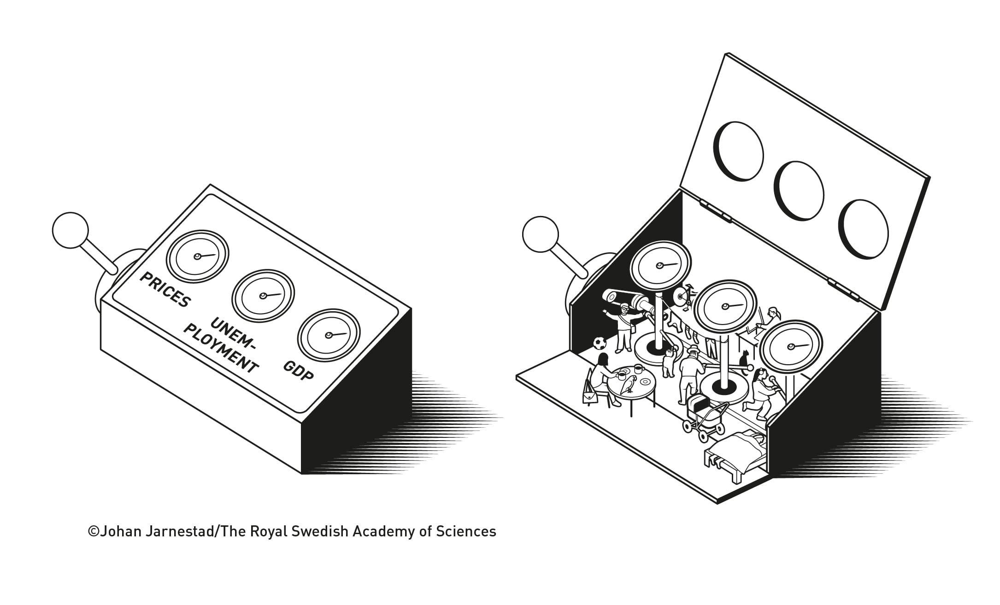
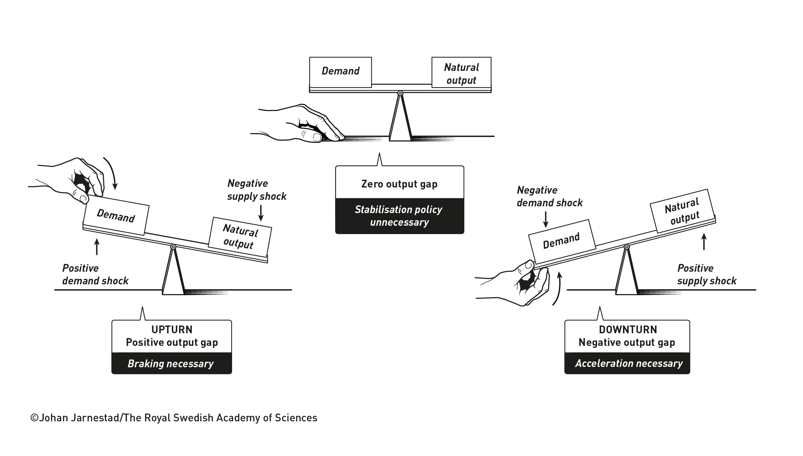
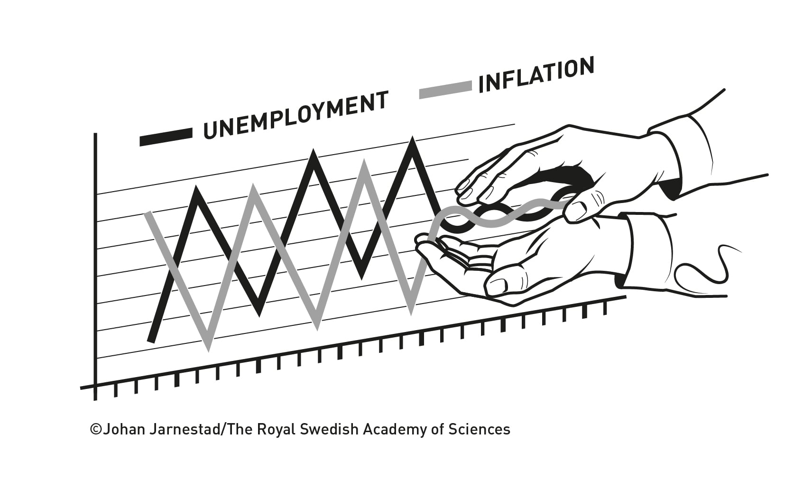

大家怕失業、不敢花錢
補助可能支持消費，但有人會存起來。收到多少錢，不等於立刻增加多少消費。
收到一筆錢，你會花掉，還是存下來？
答案，可能改變一項政策的效果。

「總體經濟穩定化的個體經濟基礎」
“for microeconomic foundations of macroeconomic stabilisation”
兩位得主各占 1/2，平分 1,200 萬瑞典克朗。官方公告 ↗政府不能只決定「發錢或降息」，還要理解家庭怎麼花錢、店家怎麼定價，以及大家怎麼看待未來。
補助可能支持消費，但有人會存起來。收到多少錢，不等於立刻增加多少消費。
降息不會變出麵粉。若商品沒有增加，卻讓更多人搶買，可能加重漲價壓力。
兩位得獎者的貢獻：建立分析方法，把家庭與企業的決定，連到整體經濟的變化，協助比較不同政策的效果。
對我們的意義：幫助政府與央行選擇更合適的政策，減輕失業與通膨的傷害；模型仍有假設與限制，不能保證政策一定成功。
接著用商店街的故事，看懂為什麼 ↓概念依據：諾貝爾官方科普；以上情境為本站白話解說。
想像一條商店街，有間麵包店。最近客人減少，老闆原本想請一位員工，現在先把計畫放下。政府想讓大家多消費，於是發出一筆臨時補助。
家裡有存款，日常支出也能應付。但小林不確定明年是否還有工作，決定把補助留著。
家裡手頭緊，先前付不起新冰箱，也借不到錢。補助一到帳，他們就去買了必需品。
Hall 幫助我們理解的，就是這個差別：家庭會根據對未來的判斷，以及現在能不能借錢、能不能動用存款，決定今天花多少。不能把「收到錢」直接等同「立刻多消費」。
小陳買冰箱，直接增加的是家電店訂單，不是麵包店訂單。只有更多家庭、企業的行為加起來，才會影響整體消費與生產；不能把每一筆補助都想成平均流到所有店家。
麵包店又遇到新難題：麵粉和能源變貴。老闆想漲價，但怕客人跑掉；他也不會每分鐘重印價目表，還要想下個月成本與同行價格會怎樣。
較低的借貸成本，可能讓部分家庭願意消費、店家願意投資，支持訂單。
降息不會直接生出麵粉。若更多人想買、商品卻沒有增加，價格壓力可能更大。
Woodford 把這些決定串進同一套模型：家庭怎麼消費、店家怎麼定價，以及利率和對未來的預期怎麼影響它們。這讓政策制定者能比較不同做法的可能效果。
政府與央行可以更有依據地分析政策如何影響訂單、工作與物價。目標是減輕衰退與通膨的傷害；模型仍有假設和限制，不是任何政策都會成功的保證。
Hall 的思路可以這樣理解：若家庭已經把目前知道的未來收入納入規劃，就不必等到預料中的加薪真的入帳，才第一次反應。真正讓它重新安排消費的，往往是原先不知道的新消息。
例如，早已確定的升薪，和突然得知工作可能不保，是不同的資訊。前者可能早已進入計畫；後者才迫使家庭改變判斷。
1978 年，Hall 把這個想法變成可測試的理論基準：在模型假設下，消費的變動不應能由既有資訊系統性預測。若現實出現可預測的變動，就要追問哪些假設不適用，例如家庭借不到錢、只能依當期收入生活。

抓住「資訊是否已知」這個差別：未來不等於未知。如果家庭早已預料一項變化，它可能提前調整；真正的新消息則不能被事先完整預測。
別誤解：不是說所有消費都毫無規律、任何預測都無用。這是特定假設下的理論基準，偏離基準的現象也能幫助研究。
想像一家餐飲店，原料成本上升。店家不會每分鐘重印菜單，也要考慮顧客和競爭者。因此價格常常不會立刻調整，這叫價格僵固。
等到要改價格時，老闆又得想：接下來成本還會升嗎？別家會漲價嗎？顧客還願意來嗎？企業也會依據對未來的判斷，決定今天的價格。
Woodford 在 2003 年的著作中，整理出一套以個體決策為基礎的新凱因斯模型。家庭的消費、企業的定價、央行的利率政策，能在同一套架構裡相互連結。

舊思路從消費、產出、通膨等總體數字的歷史關係出發。新的架構追問這些數字怎麼形成：家庭如何花錢、企業如何生產與訂價，以及政策如何改變它們的選擇。
情境為定性教學示意，不是政策建議或數值預測。現實常有多種衝擊同時發生，政策須考量資料、時間差與不確定性。

顧客少買，和同樣顧客面對更少商品，都可能造成困難，但價格壓力不同。產出減少時仍可能通膨上升，不能只看到景氣差，就假設一定要用同一種刺激方法。
家庭考慮的是未來一段時間的借貸與收入，企業也考慮接下來的成本。因此，央行今天的利率很重要，人們對未來政策的理解同樣重要。
如果央行清楚且可信地說明決策，人們比較能把政策納入規劃。若政策說法反覆、承諾不可信，反應可能不同。Woodford 的架構讓「預期」與政策溝通成為分析中的核心部分。
1970 年代的石油危機，讓高失業與高通膨同時出現，挑戰了簡單的歷史關係。當政策改變，人們的行為也可能改變；直接照搬以前的相關性，效果可能失準。
Hall 與 Woodford 的工作讓研究者更有方法回答：人們根據什麼決定？政策會改變哪個選擇？這些選擇加起來會產生什麼結果？官方指出，這類模型已成為央行與政府分析穩定政策的重要基礎。

看兩條路徑的高低起伏：穩定政策希望減輕衰退與過熱。較平順的曲線是概念示意，不是實際國家數據，也不是保證政策能消除景氣循環。
把假設說清楚，在模型中比較不同政策，研究家庭限制、定價摩擦及預期的作用。
模型不是社會的完整複製。自然利率、產出基準等難直接觀察；人的差異、金融風險與突發事件可能改變結果。
1943 年生於美國 Palo Alto；1967 年取得 MIT 博士，得獎機構為史丹佛大學。1978 年的研究提供消費理論可檢驗的基準；1982 年與 Fredric Mishkin 的家庭資料研究進一步分析消費行為。
1955 年生於美國 Chicopee；1983 年取得 MIT 博士，得獎機構為哥倫比亞大學。2003 年《Interest and Prices》整合個體決策、價格僵固與貨幣政策分析。
Hall 實拍照片：Bellhorn89，Wikimedia Commons，CC0 公有領域奉獻；原圖未修改，網頁排版顯示裁切。照片來源 · 授權。
Woodford 頭像是官方插畫，不是照片：Niklas Elmehed © Nobel Prize Outreach。四幅英文圖解：© Johan Jarnestad/The Royal Swedish Academy of Sciences；依公告非商業使用條件署名，原圖未修改。官方使用條件 · 逐張來源。
家庭與店家故事、中文看圖指南、互動因果圖為本站原創教育解說，沒有虛構為得主的實際觀察。背景線條是裝飾動畫，不是經濟數據；本站沒有 AI 生成照片。配樂〈Echoes Across Nine Centuries: The Light from the Cell〉由使用者提供。